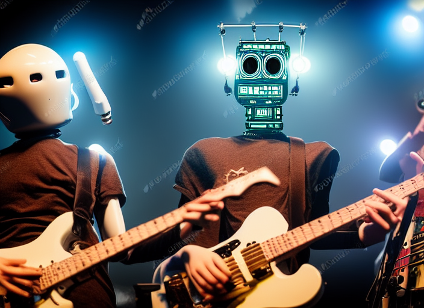

Desde casi toda mi vida, he escuchado la frase: "Lo único en lo que la tecnología no podrá reemplazar al ser humano, es en el arte", pero actualmente, esta frase esta extremadamente alejada de la realidad.
Desde el lanzamiento de Dall-E mini (una inteligencia artificial que puede generar imágenes a partir de texto, que pueden tener el estilo y la estética de diferentes artistas), las opiniones sobre el futuro del arte están bastante divididas, y la polémica se hizo más grande cuando una obra de arte generada por una IA (Inteligencia Artificial) ganó un concurso de arte digital.
Una gran multitud de personas afirman que estamos presenciando la muerte del arte, provocado por las inteligencias artificiales; sin embargo, el arte humano no murió ni morirá (al menos no por ahora), incluso, el hecho que una inteligencia artificial "haga" arte puede hacer que éste aumente su valor, tanto económico, como artísticamente.
En la mayoría de situaciones, se dice que un artista es alguien que sabe plasmar sus ideas en alguna rama del arte, pues todos tenemos ideas, pero únicamente los artistas serían los que plasman estas ideas. Teniendo en cuenta este posible significado, alguien que usa IAs para crear una obra de arte puede ser considerado un artista, pues, (hasta el momento) las inteligencias artificiales no pueden acceder a nuestro cerebro y desarrollar nuestra idea tal como la pensamos; para que una inteligencia artificial nos devuelva el resultado que tenemos en mente, es necesario ser demasiado especifico, coherente y saber redactar, es decir, tener la capacidad de plasmar sus ideas en forma de texto, lo que lo convertiría en un artista, puede que no encaje en el significado de dibujante o de compositor musical, pero, encaja en el significado de artista.
El ser humano, en la mayoría de los casos preferirá lo hecho a mano sobre lo hecho por maquinas, pues de este tipo de preferencias se mantiene activo el mercado artesanal; fuera de eso, muchas empresas usan la elaboración a mano como premisa para vender más, pues saben del valor que se le da.
Y esto es lo que le podría pasar al arte humano, pues la gente le dará más valor a un retrato hecho por un humano que uno hecho por una IA, así ambos retratos sean idénticos; de hecho, han pasado cosas similares en el pasado, como ejemplo tenemos al Hiperrealismo.
El Hiperrealismo, también conocido como Fotorrealismo, es una práctica en donde se realiza un cuadro tratando de dar un resultado lo más cercano a la realidad, en muchos casos, se usa una fotografía como referencia. A continuación, adjunto algunos de los trabajos de Leng Jun, artista chino especializado en el Hiperrealismo:
Ambas imágenes tienen detalles bastante realistas, fácilmente alguien podría confundirlas con fotos, pero, para nosotros, que sabemos que es un cuadro y no una fotografía, le damos un valor mucho más elevado que al de una foto; si tuviéramos que elegir entre uno de estos trabajos, o su equivalente fotográfico, lo más posible es que escojamos el trabajo manual.
El uso de IAs tiene sus defectos, pero no son problemas artísticos, son problemas legales, pues una Inteligencia Artificial es entrenada con cientos de imágenes y sonidos, que pueden tener derechos de autor, lo que puede generar varios problemas de legalidad, complicando las cosas más que facilitarlas.
Relacionado a lo anterior, muchas veces se han usado Inteligencias Artificiales para hacer "nuevas obras" de artistas fallecidos y/o retirados, por ejemplo, en 2021 se usó una Inteligencia Artificial de Google para "componer" canciones de artistas que fallecieron a los 27 años (Nirvana, Amy Winehouse, Jimi Hendrix, The Doors, etc.). El problema es: ¿A quién le corresponden los derechos de autor de estos temas?, ¿Pertenecen a los músicos fallecidos? ¿A los miembros restantes de las bandas? ¿Al sello discográfico de los artistas? ¿A la ONG que usó la IA para hacer las canciones? ¿A Google, porque ellos desarrollaron la IA con las que se hicieron los temas? sin duda es un tema que se tendrá que afrontar y regular en el futuro.
Como conclusión, el arte no morirá por las IAs, de hecho, podría aumentar su valor ya que el ser humano va a preferir lo manual. El usar una IA no hace que alguien no sea artista, ya que es necesario tener la capacidad de plasmar sus ideas en texto. Como todo, tiene errores, pero estos no tienen que ver mucho con lo artístico, sino con lo legal y los derechos de autor.
Bibliografía: